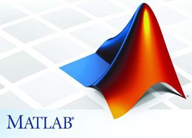

Which programming languages should you learn for marine data science?
First of all, there is no easy answer and no consensus either. Choosing from the broad range of programming languages the right one to invest time and effort learning it the next month or years is not trivial. It all boils down to what you plan to do with it and whether you want an open source program or can afford a license.
If you are a marine scientist that manages rather small datasets or queries data from existing databases with specific web interfaces or user-firendly programs and then run some statistics on this data for either a report or a peer-reviewed articles, a program specifically developed for data analysis might be the best option for you. On the other hand, if you are a data scientist in a marine research institute, you might also need to build relational databases for storage of institute-specific datasets or develop tools for specific method applications, communicate the work through different channels such as software or coding repositories as well as static and dynamic websites. In that case knowing several additional programming languages such as SQL, HTML, CSS. If you work with big datasets such as sequence and high-throughput screening data or digital image data from optical sensor systems you will need a programming languages which performs particularly fast. The key here is to understand your usage requirements in terms of generality vs specificity, as well as your personal preferred development style of performance vs productivity.
Some noteworthy aspects when choosing a language are:
- Purpose of application: Not every lanugage offers similar functionality for data storage, visualization, and analysis. Also, much of the day-to-day work in data science revolves around collecting and processing raw data for quick visualization and simple analysis. For this, fancy machine learning packages are not necessarily helpful.
- Compiled, interpreted, or JIT-compiled language
- Compiled = good performance: A so-called compiler translates the language into the machine’s native language; this lets the code run fast, particularly if the compiler is effective at optimizing. But the compiling process may take time and the resulting code might not port well across operating systems.
- Interpreted = good protability: A so-called interpreter reads and executes the language. The advantage here is generally a better portability across systems and little compiling time. On the other side, intepretated languages are usually slower than equivalent compiled languages.
- JIT-compiled = balance between performance and portability: Just-In-Time compiled languages are quickly compiled when programs written in them need to be run, usually with little optimization.
- High or low level language
- High: Focuses more on concepts that are easy to understand by the human mind (objects, mathematical functions); it is, hence, easier to develop programs based on high-level languages
- Low: More similar to the computer’s native language, i.e. machine code, and particularly suitable for high performance programs that need access to the hardware. Low level langauges are difficult to port to other platforms and practically never interpreted. However, many languages offer low-level elements.
- What type system: type systems refer to the rules that the different types of variables of a language have to follow. Different types refer to the
- checking (static vs. dynamic): If a language is statically typed, then the compiler or interpreter does the type checking once before the program runs or is compiled. If the language is dynamically type checked, then the types are checked at run-time. Generally, statically typed languages are considerably more fail-proof than dynamically typed.
- strength (strong vs weak)
- expression (manifest vs. inferred)
- safety
- Standardization: Some languages follow a formal standard (e.g. ISO or ANSI), which can be relevant if different programs need to work together.
So let’s see what other data scientiests and statisticians think, but bare in mind that some of these languages and tools do not serve the same purpose and are better used complementary.
Common technologies and languages in data science
Amongst the ~16,000 data scientists that participated in the 2017 kaggle survey (see also under MDS) the following data science/analytics tools, technologies, and languages were used most often:
programs_used %>% with(wordcloud(selections, n, scale = c(3, 0.2), max.words = 150,
random.order = FALSE, rot.per = 0.35, use.r.layout = TRUE, colors = brewer.pal(6,
"Blues")[c(4, 5, 6, 7, 8, 9)]))
Figure 1: Wordcloud of most common languages and tools amongst all data scientist.
p_acad <- programs_acad %>% ggplot(aes(x = selections, y = percent, fill = selections)) +
geom_col() + guides(fill = "none") + colormap::scale_fill_colormap(discrete = T,
colormap = colormaps$salinity, reverse = T) + theme_classic() + ylim(0,
100) + coord_flip() + ylab("Percent") + xlab("")
p_stat <- programs_stat %>% ggplot(aes(x = selections, y = percent, fill = selections)) +
geom_col() + guides(fill = "none") + colormap::scale_fill_colormap(discrete = T,
colormap = colormaps$salinity, reverse = T) + theme_classic() + ylim(0,
100) + ylab("") + coord_flip() + ylab("Percent") + xlab("")
gridExtra::grid.arrange(p_acad, p_stat, ncol = 2)
Figure 2: Barplot of most common languages and tools amongst academic data scientist (left) and statisticians (right).
Recommended programming language
Respondents were also asked what programming language they would recommend a new data scientist to learn first:
recom_lang %>% ggplot(aes(x = selections, y = percent, fill = selections)) +
geom_col() + guides(fill = "none") + scale_fill_viridis_d(direction = 1,
option = "inferno") + theme_classic() + ylab("Percent") + xlab("Recommended Language")
Figure 3: Barplot showing the programming languages data scientist recommend most for newbies (ranked by their percentage off recommendation).
In marine sciences, the most common programming language is probably R, as it is most rich in packages and libraries related to methods applied in this field, closely followed by Matlab. However, if you plan to dive into the world of numerical modelling or you will work with big datasets such as genomics you are most likely better off with Python. I personally love R and have worked with it for many years, though at the time of my PhD it wasn’t as easy to learn - without the many online tutorials and huge archives of questions and solutions at stack overflow that nowadays exist. For my own data storage I use relational databases, so SQL is my language of choice. And to communicate results and for teaching data science I also started to learn HTML and CSS. While the integration of RMarkdown into RStudio is great for producing output as PDF, presentation, HTML page or even entire website you need to learn a bit of HTML and CSS and potentially JavaScript, Bootstrap, etc. if you want to add your personal touch to it.
Overview of programming languages and applications
Here is a short summary of different programming languages and data analysis software that are more or less common in marine data science, their pros and cons and links where you can learn more about it. Since I’m fully into R I also provide you later with a detailed - but not complete- list of R packages that are useful for general or marine- specific tasks.

www.r-project.org
R is a free software environment for statistical computing and graphics. It compiles and runs on a wide variety of UNIX platforms, Windows and MacOS. R was released in 1995 as a direct descendant of the older S programming language and is currently supported by the R Foundation for Statistical Computing. It is, like S, designed around a true computer language, and it allows users to add additional functionality by defining new functions. Much of the system is itself written in the R dialect of S, which makes it easy for users to follow the algorithmic choices made. For computationally-intensive tasks, C, C++ and Fortran code can be linked and called at run time. Advanced users can write C code to manipulate R objects directly.
In some ways R is not a typical programming language, as it’s not a general purpose one. R’s roots lies in statistics, as it has been developed specifically to deal with such needs. It provides a wide variety of statistical (linear and nonlinear modelling, classical statistical tests, time-series analysis, classification, clustering, etc.) and graphical techniques, and is highly extensible. This is one of its particular stengths, its package system that allows the functional extension of R. There are about eight packages supplied with the R distribution and many more are available through the CRAN family of Internet sites covering a very wide range of modern statistics. At present the official CRAN package repository features > 10,000 packages covering common and not-so-common tasks! It is through this, and its ties with the academic community, that R keeps up to date with all latest developments in data science and machine learning. Another of R’s strengths is the ease with which well-designed publication-quality plots can be produced, including mathematical symbols and formulae where needed.
One of R’s downside as a result of its open-source and package system is that it has been plagued by issues such as memory management and security, and its syntax is not very straightforward or disciplined.

www.rstudio.com
RStudio is a free and open-source integrated development environment (IDE) for R and has become the standard amongst R users in recent years. The program has an integrated text editor and data/package manager and helps writing and executing R code and analyzing data with R. It provides further version control, LaTeX integration, keyboard shortcuts, debugging tools and supports various different static and dynamic output formats through R Markdown. RStudio runs either on a desktop (Windows, Mac, and Linux) or in a web browser connected to RStudio Server. It is partly written in the C++ programming language and uses the Qt framework for its graphical user interface. The bigger percentage of the code is written in Java.

www.python.org
Python is an interpreted high-level programming language for general-purpose programming. First released in 1991, Python has evolved to the fastest-growing programming language with an extensive range of purpose-built modules and community support. Many online services provide a Python API. Python has a design philosophy that emphasizes code readability, notably using significant whitespace, and clear programming on both small and large scales. The language features a dynamic type system and automatic memory management. It supports multiple programming paradigms, including object-oriented, imperative, functional and procedural, and has a large and comprehensive standard library. Interpreters are available for many operating systems. Python is considered as excellent all-rounder and particularly suitable for machine learning with libraries such as Google’s Tensorflow.
A nice online tutorial on Python is available at www.w3schools.com/python/

www.isocpp.org
C++ is a statically-typed, free-form, intermediate-level general-purpose, compiled programming language, with implementations of it available on many platforms. Many vendors provide C++ compilers, including the Free Software Foundation, Microsoft, Intel, and IBM. C++ has imperative, object-oriented and generic programming features, while also providing facilities for low-level memory manipulation. It was developed by Bjarne Stroustrup at Bell Labs since 1979, as an extension of the C language -the mother of all programming languages- as he wanted an efficient and flexible language similar to C, which also provided high-level features for program organization. Since then C++ has influenced many other languages including C#, D, Java, and newer versions of C.
In that sense, C++ is not the ideal programming language for data analysis per se but rather for data analysis programs to base some of their functionality on (as done e.g. in R, RStudio). Code in C++ is also less readable as in R or Python. See the following example:
To print the text “Hello world!” you would type in C++
#Include stdout
Int main()
{
Std::cout <<"Hello, world!";
}In R you would write
print("Hello world!")And in Python
Print ("Hello world!")SQL (‘Structured Query Language’) defines, manages and queries relational databases. The language appeared by 1974 and has since undergone many implementations, but the core principles remain the same. Some implementations are free (e.g. MySQL, PostgreSQL), others proprietary (e.g. Oracle CHECK!!!!). SQL represents one of the favourites amongst data sciencists as indicated by the kaggle survey. From advanced databases to NOSQL data stacks, SQL is used to parse data in the ETL stack, for advanced queries and for dealing especially with large databases, reducing the turnaround time for online requests by its fast processing time. Thus, SQL is more useful as a data processing language than as an advanced analytical tool. However, learning SQL can be a good addition into skills required for data science and ML experts, as this is looked after by most employers as a preferred skill set.
Common SQL database systems are: MySQL, SQL Server, MariaDB, PostgreSQL, Oracle, Sybase, Informix, and MS Access.
A nice online tutorial on SQL is available at www.w3schools.com/sql/

www.java.com
Java is another general-purpose, high-level, compiled and object-oriented language intended to have as few implementation dependencies possible and to run on all platforms without the need for recompilation. Its special feature is “write once, run anywhere” (WORA). Once the code is compiled to bytecode, it can run on any Java virtual machine (JVM) regardless of computer architecture. Thus, portability is one of the great facets of this language. Java was originally developed at Sun Microsystems, now owned by Oracle, and is nowadays one of the most popular programming languages amongst client-server web applications. A large number of companies, especially big multinational companies use the language to develop backend systems and desktop apps. Beside the criticism of speed1 and safety2, Jave is commonly used in software engineering. In marine data science, howeever it is less common.
A nice online tutorial on Java is available at www.w3schools.com/java/

www.fortran.com
Fortran (formerly FORTRAN, derived from FORmula TRANslation) is a general-purpose, compiled imperative programming language that was designed for scientists and engineer in the 1950s by IBM. Fortran came to dominate this area of programming early on and has been in continuous use for over half a century in computationally intensive areas such as numerical weather prediction, finite element analysis, computational fluid dynamics, computational physics, crystallography and computational chemistry. It is a popular language for high-performance computing[4] and is used for programs that benchmark and rank the world’s fastest supercomputers.[5] Revision of the language led to FORTRAN 77, the language we use today. The standard for FORTRAN 90 is now available although not yet in widespread use. F77 is a subset of F90.

www.mathworks.com
MATLAB is a numerical computing language developed by Mathworks in the 1980s and based of C, C++, and Java programming languages. MATLAB is a fast and stable program with solid algorithms for complex math and used throughout academia and industry. MATLAB is well-suited for quantitative applications with sophisticated mathematical requirements such as signal processing, Fourier transforms, matrix algebra and image processing. It also has some great in-built plotting options.
The major drawback of MATLAB are its high pricing for basic licenses and all additional libraries. Also, since MATLAB is not an open source language and, hence, does not allow users to easily extend the functionality, MATLAB does not keep up with latest developments in data science and machine learning as R or Python.

www.sas.com
SAS is one of the most popular languages amongst statistians but less so in the data science community. It has a wide range of statistical functions with a user friendly GUI that helps data scientists learn quickly. It is an easy to learn programming language and preferred as a must have language for beginners entering analytics industry. The two biggest drawbacks are - similar to Matlab - its high pricing for the licenses as well as the limited flexibility for extending its functionality.
http://jupyter.org
The Jupyter Notebook is an open-source web application that allows you to create and share documents that contain live code, equations, visualizations and narrative text. The Notebook has support for over 40 programming languages, including Python, R, Julia, and Scala. Notebooks can be shared with others using email, Dropbox, GitHub and the Jupyter Notebook Viewer. The code run in Jypyter can produce rich, interactive output: HTML, images, videos, LaTeX, and custom MIME types.
Other
Perl (www.perl.org)
Perl is an open source, general-purpose, interpreted cross platform programming language originally developed for text manipulation and now used for a wide range of tasks including system administration, web development, network programming, and GUI development.
Julia (www.julialang.org)
Julia is a high level dynamic programming language designed to address the needs of high performance numerical analysis and computational science and is increasingly gaining popularity amongst data scientists. The base library written in Julia combines also open source C and Fortran libraries for linear algebra, random number generation, signal processing, and string processing.
Scala (www.scala-lang.org)
Scala is a general-purpose, scalable language, which is organized to run on the Java Virtual Machine (JVM). Scale has a large user interface, is quite user-friendly and can be used to write apps.
Ruby (www.ruby-lang.org)
Ruby is a dynamic, interpreted, reflective, object-oriented, general-purpose programming language developed in the 1990s that has a more coherent design than its close rivals (Pyhton and Perl). While the Ruby-on-Rails framework initially gained a big popularity in Web applications, it did not maintain momentum due to performance and scalability problems.
R packages
The R package system has grown so much and fast (> 10,000 package in 2018) that it is shear impossible to list all the useful package a marine (data) scientist would like to use at some point. So please use the following list rather as a starting point. You can find also great overviews of useful packages at the CRAN task views for specific topics:
- For an overview of packages for ecological and environmental analyses in R see the Environmetrics CRAN task view maintained by Gavin Simpson.
- For time series analysis see the TimeSeries CRAN task view maintained by Rob J Hyndman.
- For spatial and spatio-temporal analyses see the Spatial CRAN task view maintained by Roger Bivand as well as the SpatioTemporal task view maintained by Edzer Pebesma.
- For machine learning and statistical learning see MachineLearning mainatined by Torsten Hothorn.
- For multivariate analyses see the Multivariate maintained by Paul Hewson and the Cluster CRAN task view maintained by Friedrich Leisch and Bettina Gruen
To stay up-to-date check out also R-bloggers, which is a blog with news on latest advances, package presentations and online tutorials.
Accessing/retrieving data
- rvest: A general package to easily harvest (scrape) data from websites.
- DATRAS: Read and manipulate trawl survey data from the DATRAS database.
- ramlegacy: Package to download, import, convert, and cache the RAM Legacy Stock Assessment Database.
- rnoaa: Access a whole bunch of NOAA datasets → for more info see also the online tutorial.
- robis: R client for the Ocean Biogeographic Information System (OBIS) API.
The non-profit initative rOpenSci aims to make scientific data retrieval reproducible and has developed in the past an ecosystem of open source tools and reviewed community developed software. Various R packages have been built within the rOpenSci community useful for marine data scientists:
- pangaear: This package offers tools to interact with the PANGAEA Database, including functions for searching for data, fetching datasets by dataset ID, and working with the PANGAEA OAI-PMH service.
- Climate data:
- ccafs: R client for Climate Change, Agriculture, and Food Security (CCAFS) General Circulation Models (GCM) data.
- Geospatial data:
- mregions: Package to access all of the data at www.marineregions.org. Allows visualization of marine regions with associated data paired with analysis, use of marine region geospatial boundaries to query data providers (e.g., OBIS), and geocoding.
- rnaturalearth: An R package to hold and facilitate interaction with natural earth map data. The Natural Earth website structures vector data by scale, category and type. These determine the filenames of downloads. ‘rnaturalearth’ uses this structure to facilitate download (like an API).
- Taxonomic data (see also this overview):
- Reol: R client for all data from Encyclopedia of Life (EOL), which includes taxonomic data. Note that ‘taxize’ also interfaces with EOL data, only the taxonomic data though.
- ritis: R client for the Integrated Taxonomic Information System (ITIS) database of taxonomic data.
- taxize: This is the place to go for most taxononomic data. ‘taxize’ connects to a lot of data sources, and has consistent data outputs across the data sources.
- taxizedb: Evolved from the ‘taxize’ package to handle larger taxonomic data sets or infrequent internet access. ‘taxizedb’ downloads taxonomic database dumps from many different providers and allows either SQL queries or data wrangling with the ‘dplyr’ package.
- taxizesoap: An extension to ‘taxize’, but for data sources that use SOAP data transfer protocol, which is hard to support in R. This package is not on CRAN.
- worrms: R client for the World Register of Marine Species (WoRMS) API.
- Species data (see also here for an overview):
- bold: This package retrieves data from the BOLD database of barcode clusters, and allows for searching of over 1.7M public records using multiple search criteria including sequence data, specimen data, specimen plus sequence data, as well as trace files.
- originr: Provides functions to scrapes pecies origin data from the web (e.g. from ITIS, Encyclopedia of Life, Global Invasive Species Database, Global Register of Introduced and Invasive Species).
- rredlist: R client for the IUCN Red List.
- rfishbase: R interface to the fishbase database. ‘rfishbase 3.0’ queries pre-compressed tables from a static server and employs local caching (through memorization) to provide much greater performance and stability, particularly for dealing with large queries involving 10s of thousands of species.
- rgbif: Interface to the Global Biodiversity Information Facility API → for more info see https://github.com/ropensci/rgbif.
- traits: R client for various sources of species trait data.
- Fisheries data:
- rfisheries: Package for interacting with fisheries databases at openfisheries.org.
Data wrangling and processing
- tidyverse: A collection of R packages that share an underlying design philosophy, grammar, and data structures. The tidyverse package is designed to make it easy to install and load core packages from the tidyverse in a single command (these includes the packages:
- To manipulate/parse taxonomic names
- metacoder: Package to parse, manipulate, and visualize metabarcoding/taxonomic data see also the article by Foster et al. 2017
- taxview: Package to summarize taxonomic data in the form of getting taxonomic hierarchy data (via the ‘taxize’ package) to facilitate taxonomic summaries.
- NetCDF (Network Common Data Form): Most climate data (observations, model output, reanalysis) is in the NetCDF format, a self-documenting, machine-independent format for creating and distributing arrays of gridded data:
- ncdf4: Provides a high-level R interface to import netCDF files (version 4 or earlier), which are binary data files that are portable across platforms and include metadata information in addition to the data sets. It is also easy to create new netCDF dimensions, variables, and files, in either version 3 or 4 format, and manipulate existing netCDF files. This package replaces the former ‘ncdf’ package, which only worked with netcdf version 3 files.
- tidync: Systematic approaches to NetCDF data extraction, manipulation and visualization. The data extracted can be used directly as an array, or in “long form” form as a data frame for “tidy” analysis and visualization contexts.
- EchoviewR: An R package for automated processing of active acoustic data using Echoview → for more info see also the article by Harrison et al., 2015
General visualisation packages
Visualisation packages belong to one of two grammar styles: the old school base graphics and the ggplot2 system for declaratively creating graphics, based on The Grammar of Graphics, which has gained a large popularity in recent years:
base graphics:
- diagram: Visualises simple graphs (networks) based on a transition matrix, utilities to plot flow diagrams, visualising webs, electrical networks, etc.
- mapplots: Creates simple maps, adds sub-plots like pie plots to a map or any other plot, and formats, plots and exports gridded data. The package was originally developed for displaying fisheries data but most functions can be used for more generic data visualisation.
- shape: Provides functions for plotting graphical shapes such as ellipses, circles, cylinders, arrows, etc.
ggplot2-based graphics:
An overview for ggplot2 extensions (40 in Nov. 2018) can be found here: https://www.ggplot2-exts.org/
- cowplot: Provides a publication-ready theme for ‘ggplot2’, which requires a minimum amount of fiddling with sizes of axis labels, plot backgrounds, etc.
- gganimate: Wraps the animation package to create animated ggplot2 plots.
- ggraph: Supports relational data structures such as networks, graphs, and trees.
- ggmuller: Creates Muller plots for visualizing evolutionary dynamics.
- ggridges: Creates ridgeline plots that are partially overlapping line plots to create the impression of a mountain range. They can be quite useful for visualizing changes in distributions over time or space.
- ggthemes: Some extra geoms, scales, and themes for ggplot
- qqplotr: Provides functions to plot quantile-quantile (Q-Q) and probability-probability (P-P) points, lines, and confidence bands.
- ggvis: An implementation of an interactive grammar of graphics, taking the best parts of ‘ggplot2’, combining them with the reactive framework of ‘shiny’ and drawing web graphics using ‘vega’ → for more info see also the ggvis website.
Color schemes:
- colormap: Allows to generate colors from palettes defined in the colormap module of ‘Node.js’ → see https://github.com/bpostlethwaite/colormap for more information. In total it provides 44 distinct palettes made from sequential and/or diverging colors. In addition to the pre defined palettes you can also specify your own set of colors. There are also scale functions that can be used with ‘ggplot2’.
- colourpicker: A colour picker that can be used as an input in Shiny apps or Rmarkdown documents. The colour picker supports alpha opacity, custom colour palettes, and many more options. A Plot Colour Helper tool is available as an RStudio Addin, which helps you pick colours to use in your plots.
- RColorBrewer: For visualization, the colour palettes provided in this package are very useful, and may be modified or extended using the
colorRampPalette()function provided with R → for more info see also http://colorbrewer2.org.
Time series
See also the TimeSeries CRAN task view for complementary information.
The base package ‘stats’ offers various function for time series data: ts() creates time-series objects from vectors; the ar() and arima() functions fit autoregressive (AR), moving average (MA), autoregressive moving average (ARMA) and integrated ARMA (ARIMA) time series model to the data. Classes “POSIXct” and “POSIXlt” implement the POSIX standard for date/time (intra-day) information and also support time zones and daylight savings time. However, the time zone computations require some care and might be system-dependent. Internally, “POSIXct” objects are the number of seconds since 1970-01-01 00:00:00 GMT. The ‘tidyverse’ package lubridate provides functions that facilitate certain POSIX-based computations.
- TSA: Contains R functions and datasets detailed in the book “Time Series Analysis with Applications in R by Jonathan Cryer and Kung-Sik Chan.
- tseries and zoo: Both packages provide general handling and analysis of time series data. Irregular time series can be handled by using package ‘zoo’ as well as the function
irts()in ‘tseries’ → for more info on ‘zoo’ see also the Quick Reference vignette. - tsibble and tibbletime build on the tidy principle and extend the tibble to store and manage temporal data. ‘tsibble’ provides a ‘tbl_ts’ class (the ‘tsibble’), which is built on top of the ‘tibble’. The ‘tsibble’ aims at easily manipulating and analysing temporal data, including counting and filling time gaps, aggregate over calendar periods, performing rolling window calculations, and etc. ‘tibbletime’ creates time aware tibbles that allows time-based subsetting on tibbles, a quick summary and aggregation of results by time periods, and creating columns that can be used as ‘dplyr’ time-based groups.
- xts: eXtensible Time Series - Provide for uniform handling of R’s different time-based data classes by extending zoo, maximizing native format information preservation and allowing for user level customization and extension, while simplifying cross-class interoperability.
Time series modelling
- CommonTrend: Provides tools to extract and plot common trends from a cointegration system using different approaches that are widely used in macroeconomics.
- dse: This package provides a variety of more advanced estimation methods and tools for multivariate, linear, time-invariant, time series models → for more info see also the User Guide.
- dynlm: Convenient interface to fitting time series regressions via ordinary least squares.
- dyn: Provides a different approach to that of ‘dynlm’ by allowing time series data to be used with any regression function written in the style of lm such as
lm(),glm(),loess(),quantreg::rq(),MASS::rlm(),MCMCpack::MCMCregress(),quantreg::rq(),randomForest::randomForest()amongst others, whilst preserving the time series information. - forecast: Provides methods and tools for displaying and analysing univariate time series forecasts including exponential smoothing via state space models and automatic ARIMA modelling.
- MARSS: Provides maximum-likelihood parameter estimation for constrained and unconstrained linear Multivariate Autoregressive State-Space (MARSS) models fit to multivariate time-series data. Fitting is primarily via an Expectation-Maximization (EM) algorithm, although fitting via the BFGS algorithm (using the optim function) is also provided. MARSS models are a class of dynamic linear model (DLM) and vector autoregressive model (VAR) model. Functions are provided for parametric and innovations bootstrapping, Kalman filtering and smoothing, bootstrap model selection criteria (AICb), confidences intervals via the Hessian approximation and via bootstrapping and calculation of auxiliary residuals for detecting outliers and shocks → for more information see also the User Guide, and the package website https://nwfsc-timeseries.github.io/MARSS/.
- pastecs: Regularisation, decomposition and analysis of space-time series.
- tsDyn: Implements nonlinear autoregressive (AR) time series models. For univariate series, a non-parametric approach is available through additive nonlinear AR. Parametric modeling and testing for regime switching dynamics is available when the transition is either direct (TAR: threshold AR) or smooth (STAR: smooth transition AR, LSTAR). For multivariate series, one can estimate a range of TVAR or threshold cointegration TVECM models with two or three regimes → see also this Introduction.
Frequency analysis
- Spectral density estimation is provided by
spectrum()in the ‘stats’ package, including the periodogram, smoothed periodogram and AR estimates. - The forecast package also provides some simple harmonic regression facilities via the
fourier()function. - wavelets: Includes computing wavelet filters, wavelet transforms and multiresolution analyses.
- WaveletComp: Provides some tools for wavelet-based analysis of univariate and bivariate time series including cross-wavelets, phase-difference (with filtering options), significance with simulation algorithms.
Changepoint detection
- Univariate time series
- bcp: Bayesian analysis of change points in the mean - provides an implementation of the Barry and Hartigan (1993) product partition model for the normal errors change point problem using Markov Chain Monte Carlo. It also extends the methodology to regression models on a connected graph (Wang and Emerson, 2015); this allows estimation of change point models with multivariate responses → for more info see also the article by Erdman & Emerson (2007).
- changepoint: Implements various mainstream and specialised changepoint methods for finding single and multiple changepoints within data. Many popular non-parametric and frequentist methods are included → for more info see this useful tutorial or the article by Killick & Eckley (2014).
- segmented: Given a regression model, ‘segmented’ updates the model by adding one or more segmented (i.e., piece-wise linear) relationships. Several variables with multiple breakpoints are allowed.
- strucchange: Detects (multiple) structural changes in (linear) regression models. strucchange features tests/methods from the generalized fluctuation test framework as well as from the F test (Chow test) framework. The breakpoints in regression models with structural changes can be estimated together with confidence intervals.
- Multivariate time series
- changepoint.mv: Detects the most recent changepoints for panel data consisting of many related univariate timeseries.
- ecp: Implements various non-parametric procedures for finding multiple changepoints. Two methods make use of dynamic programming and pruning, with no distributional assumptions other than the existence of certain absolute moments in one method. Hierarchical and exact search methods are included → for more info see James & Matteson (2014).
- rioja: the function
chclust()allows the detection of changepoints in multivariate data via a constrained clustering algorithm in which clusters are constrained by sample order (e.g. ordered in space in time).
Spatial analysis
While base R includes many functions that can be used for reading, visualising, and analysing spatial data, specific packages are required for “geographical” spatial data, where observations can be identified with geographical locations, and where additional information about these locations may be retrieved. A large number of these packages provide spatial statistical methods or interfaces to GIS, and many of them provide specific classes and plotting methods for spatial data. The following is only a small selection of most important packages. For a much more comprehensive overview of spatial packages in R see the Spatial CRAN task view maintained by Roger Bivand as well as the SpatioTemporal task view maintained by Edzer Pebesma.
Fundamental packages
Packages for class definition, import/export and handling of spatial data:
- gdistance: Provides calculation of distances and routes on geographic grids.
- geosphere: Permits computations of distance and area to be carried out on spatial data in geographical coordinates.
- landsat: Provides tools for processing of Landsat or other multispectral satellite imagery. Includes relative normalization, image-based radiometric correction, and topographic correction options.
- maptools: Provides various mapping functions. It includes binary access to ‘GSHHG’ shoreline files. The package also provides interface wrappers for exchanging spatial objects with packages such as ‘PBSmapping’, ‘spatstat’, ‘maps’, ‘RArcInfo’, ‘Stata tmap’, ‘WinBUGS’, ‘Mondrian’, and others.
- raster: The package is a major extension of spatial data classes to virtualise access to large rasters, permitting large objects to be analysed, and extending the analytical tools available for both raster and vector data.
- rgdal: R’s interface to the popular C/C++ spatial data processing library GDAL. Maps may be vector-based or raster-based. The ‘rgdal’ package provides bindings to GDAL-supported raster formats and OGR-supported vector formats. It contains functions to write raster files in supported formats. The package also provides PROJ.4 projection support for vector objects ( this site provides searchable online PROJ.4 representations of projections). Both ‘GDAL’ and ‘PROJ.4’ libraries are external to the package, and, when installing the package from source, must be correctly installed first. Also the GeoJSON format can be written and read using ‘rgdal’.
- rgeos: R’s interface to the powerful vector processing library GEOS.
- sf: ‘sf’ is a new R package, which is meant to supersede ‘sp’. It provides native support for Simple Features in R, can perform topological operations by interfacing with GEOS, can read and write to a wide variety of spatial file formats courtesy of GDAL, and binds to PROJ for projection conversions and datum transformations. Hence, ‘sf’ appears to do everything ‘sp’, ‘rgdal’, and ‘rgeos’ did, but in a more modern and intuitive fashion. My favourite thing about ‘sf’ is that the authors have adopted the tidy data principle:
- the package puts geometries in a list-column of class sfc , where each list element is a feature geometry of class sfg,
- all functions begin with
st_for easy RStudio tab completion, - snake_case is used throughout the package,
- ‘dplyr’ and ‘tidyr’ verbs have been defined for the sf objects,
- functions are pipe-friendly,
- AND ‘ggplot2’ is able to plot sf objects directly → for more information check out the sf website.
- sp: ‘sp’ has been the standard for storing spatial data in R and many other packages have become dependent on the sp classes. The package provides classes and methods for spatial data (points, lines, polygons, grids) and utility functions for e.g. plotting data as maps, spatial selection, retrieving coordinates, subsetting, printint, summary, etc. → you’ll find more info on the R-Forge rspatial project website, including a visualisation gallery.
- spacetime: Extends the shared classes defined in ‘sp’ for spatio-temporal data (see Spatio-Temporal Data in R).
- An alternative approach to the ‘sp’ classes and methods are the PBS packages:
- PBSmapping: Two-dimensional plotting features similar to those commonly available in a Geographic Information System. The package has evolved from fisheries research conducted at the Pacific Biological Station (PBS) in Nanaimo, British Columbia, Canada.
- PBSmodelling: Provides modelling support. It focuses particularly on tools that make it easy to construct and edit a customized graphical user interface (‘GUI’).
Visualisation of spatial data
- cartography: This package allows various cartographic representations such as proportional symbols, choropleth, typology, flows or discontinuities → see also the cheat sheet.
- ggmap: Extends the plotting package ‘ggplot2’ for maps with a collection of functions to visualize spatial data and models on top of static maps from various online sources (e.g Google Maps and Stamen Maps).
- ggsn: Adds north symbols (18 options) and scale bars in kilometers to maps in geographic or metric coordinates created with ‘ggplot2’ or ‘ggmap’.
- leafletR: Displays your spatial data on interactive web-maps using the open-source JavaScript library Leaflet. ‘leafletR’ can combine vector data and online map tiles from different sources.
- mapview: Creates interactive visualisations of spatial data with or without background maps. Attributes of displayed features are fully queryable via pop-up windows. Additional functionality includes methods to visualise true- and false-color raster images, bounding boxes, small multiples and 3D raster data cubes.
- plotKML: Visualization of spatial and spatio-temporal objects in Google Earth. Writes sp-class, spacetime-class, raster-class and similar spatial and spatio-temporal objects to KML following some basic cartographic rules.
- rasterVis: Used with the ‘raster’ package it can provide enhanced visualisation and interaction. It implements visualization methods for quantitative data and categorical data, both for univariate and multivariate rasters. It also provides methods to display spatio-temporal rasters and vector fields. See the website for examples → see the website for more information.
- rworldmap: Enables mapping of country level and gridded user datasets. Modern country boundaries are provided at 2 resolutions by rworldmap along with functions to join and map tabular data referenced by country names or codes. Chloropleth and bubble maps are supported and general functions to work on user supplied maps (see A New R package for Mapping Global Data.
- tmap: Thematic maps are geographical maps in which spatial data distributions are visualized. This package offers a flexible, layer-based, and easy to use approach based on the Grammar of Graphics syntax to create thematic maps, such as choropleths and bubble maps → a nice introduction is provided here!
Spatial modelling / Geostatistics:
The choice of package for spatial analysis and modelling will depend greatly on the type of data and its distribution. If the data are characterised by point support and the spatial process is continuous, geostatistical methods may be used or functions in the nlme package, which is one of the base packages.
- automap: This package performs an automatic interpolation by automatically estimating the variogram and then calling gstat.
- geoR: Useful for model-based geostatistics including traditional, likelihood-based and Bayesian methods.
- geoRglm: An extension to the package ‘geoR’, which must be installed first. ‘geoRglm’ provides functions for inference in generalised linear spatial models. The posterior and predictive inference is based on MCMC methods.
- gstat: The package provides a wide range of functions for univariate and multivariate geostatistics, also for larger datasets. It covers, for instance, variogram modelling and plotting, various kriging methods, or sequential Gaussian or indicator (co)simulation → see also this brief tutorial.
- ngspatial: Provides tools for analyzing ecological spatial data, especially non-Gaussian areal data.
- rtop: A package for geostatistical interpolation of data with irregular spatial support such as runoff related data or data from administrative units.
- spatial: This package is shipped with base R, and contains several core functions for kriging and point pattern analysis.
- SpatialTools: This package has an emphasis on kriging, and provides functions for prediction and simulation. It is intended to be relatively straightforward, fast, and flexible.
- spdep: If the support is areal, and the spatial process is not being treated as continuous, functions provided in the ‘spdep’ package may be used. This package can also be seen as providing spatial econometrics functions, and, as noted above, provides basic functions for building neighbour lists and spatial weights, tests for spatial autocorrelation for areal data like Moran’s I, and functions for fitting spatial regression models. It provides the full range of local indicators of spatial association, such as local Moran’s I and diagnostic tools for fitted linear models, including Lagrange Multiplier tests. Spatial regression models that can be fitted using maximum likelihood include spatial lag models, spatial error models, and spatial Durbin models. For larger data sets, sparse matrix techniques can be used for maximum likelihood fits, while spatial two stage least squares and generalised method of moments estimators are an alternative.
- vardiag: Interactive variogram diagnostics may be carried out with this package.
Oceanographic analysis
- AquaEnv: Toolbox for the experimental aquatic chemist, focused on acidification and CO2 air-water exchange.
- EnvStats: Graphical and statistical analyses of environmental data, with focus on analyzing chemical concentrations and physical parameters, usually in the context of mandated environmental monitoring. Major environmental statistical methods found in the literature and regulatory guidance documents, with extensive help that explains what these methods do, how to use them, and where to find them in the literature. Numerous built-in data sets from regulatory guidance documents and environmental statistics literature. Includes scripts reproducing analyses presented in the book “EnvStats: An R Package for Environmental Statistics” (Millard, 2013).
- hydroGOF: Useful for implementing both statistical and graphical goodness-of-fit measures between observed and simulated values, mainly oriented to be used during the calibration, validation, and application of hydrological/environmental models.
- marelac: Datasets, constants, conversion factors, and utilities for ‘MArine’, ‘Riverine’, ‘Estuarine’, ‘LAcustrine’ and ‘Coastal’ science. Allows to calculate diffusion constants, gas solubilities, gas exchange coefficients, the properties of seawater
- marmap: A package for importing, plotting and analyzing bathymetric and topographic data. ‘marmap’ can query the ETOPO1 bathymetry and topography database hosted by the NOAA, use simple latitude-longitude-depth data in ascii format, and take advantage of the advanced plotting tools available in R to build publication-quality bathymetric maps → for more info see Pante & Simon-Bouhet (2013)
- oce: Package to read, summarize and plot oceanographic data, including ADCP measurements, measurements made with argo floats, CTD measurements, sectional data, sea-level time series, coastline and topographic data, etc. Provides specialized functions for calculating seawater properties such as potential temperature in either the UNESCO or TEOS-10 equation of state. Produces graphical displays that conform to the conventions of the oceanographic literature → for more info see also the vignette.
- oceanmap: Plotting toolbox for 2D oceanographic data (satellite data, sst, chla, ocean fronts & bathymetry).
- Oceanview: Specifically designed for visualising complex multidimensional oceanographic data. It can produce a.o. quiver plots, vector plots, etc. in base R graphics → more infos here and see the vignette. The package is derived from 2 other visualiation packages that are also worth exploring, i.e. plot3d and plot3drgl.
- seaCarb: Calculates parameters of the seawater carbonate system and assists the design of ocean acidification perturbation experiments.
Fishy packages for analysis
For packages on capture-recapture analyses see also the comprehensive overview on Derek Ogle’s website fishR.
- FLR: The Fisheries Library in R is a collection of tools for quantitative fisheries science, developed in the R language, that facilitates the construction of bio-economic simulation models of fisheries systems. The library includes several packages, which can be installed all together, including their dependecies, using the code
source("http://flr-project.org/R/instFLR.R")or by selecting your choice of package from the FLR github repository using the codeinstall.packages(pkgs = package_name, repos="http://flr-project.org/R"). A good starting point to explore FLR is A quick introduction to FLR.
Stock assessments and population dynamic models
- CatDyn: Useful for fishery stock assessments by Generalized Depletion Models based on fishery catch dynamics instead of fish population dynamics.
- DLMtool: Data-Limited Methods Toolkit – Development, simultion testing, and implementation of management procedures for data-limited fisheries → see also the article by Mildenberger et al. (2017).
- fishdynr: An R package of fisheries science related population dynamics models.
- fishmethods: Provides functions for various fisheries stock assessment methods.
- fishMod: Fits models to catch and effort data. Single-species models are 1) delta log-normal, 2) Tweedie, or 3) Poisson-gamma (G)LMs.
- FSA: A variety of simple fish stock assessment methods → for more info see http://derekogle.com/FSA/.
- LBSPR: Simulate expected equilibrium length composition, yield-per-recruit (YPR), and the spawning potential ratio (SPR) using the length-based SPR (LBSPR) model. Fit the LBSPR model to length data to estimate selectivity, relative apical fishing mortality, and the spawning potential ratio for data-limited fisheries.
- mixdist: Fits finite mixture distribution models to grouped data and conditional data by maximum likelihood, possibly separating age-classes from a length frequency.
- r4ss: A collection of R functions for use with Stock Synthesis, a fisheries stock assessment modeling platform written in ADMB at NOAA.
- scape: Import, plot, and diagnose results from statistical catch-at-age models, used in fisheries stock assessment; generally used to connect with ADMB.
- ss3sim: Framework for fisheries stock assessment simulation testing with Stock Synthesis 3.
- TropFishR: Tropical Fisheries Analysis with R – collection of fisheries models based on the the FAO Manual “Introduction to tropical fish stock assessment”. Focus is the analysis of length-frequency data and data poor fisheries.
Fishery analyses
- fecR: Calculates fishing effort following the DG MARE Ad-Hoc Workshops on Transversal Variables in Zagreb (2015) and Nicosia (2016) → for more info see the vignette.
- VMSBase: Tool to process, analyze, combine, integrate and plot fishery data from the vessel monitoring system, automatic information system or other tracking devices, as well as the catches or landings dataset from logbooks or vessel register.
Otholith and age analyses
- ALKr: Provides functions that implement several algorithms for generating age-length keys for fish populations from incomplete data.
- RFishBC: Helps fisheries scientists collect growth data from calcified structures and back-calculate estimated lengths at previous ages → for more infos see also http://derekogle.com/RFishBC/.
- shapeR: The package extends previously described software used for otolith shape analysis by allowing the user to automatically extract closed contour outlines from a large number of images, perform smoothing to eliminate pixel noise, choose from conducting either a Fourier or wavelet transform to the outlines and visualize the mean shape.
Others
- Bioenergetics 4.0: A shiny app for bioenergetics modeling.
- fishmove: Provides functions to predict fish movement parameters plotting leptokurtic fish dispersal kernels.
- RchivalTag: A set of functions to generate, access and analyze standard data products from archival tagging data.
- swfscMisc: Collection of conversion, analytical, geodesic, mapping, and plotting functions developed by the Southwest Fisheries Science Center of NOAA.
Modelling species responses and other data (supervised learning)
Analysing species response curves or modeling other data often involves the fitting of standard statistical models to ecological data and includes simple (multiple) regression, Generalised Linear Models (GLM), extended regression (e.g. Generalised Least Squares [GLS]), Generalised Additive Models (GAM), (Non-)Linear Mixed Effects Models, and classification or tree-based models.
The base installation of R provides lm() and glm() for fitting linear and generalised linear models, respectively, while the nls() function can be used for determining the nonlinear (weighted) least-squares estimates of the parameters of a nonlinear model. See also the MachineLearning CRAN task view for information on supervised statistical and machine learning packages.
- akima: Several cubic spline interpolation methods of H. Akima for irregular and regular gridded data are available through this package, both for the bivariate and univariate case.
- boot: Provides bootstrap functions (originally by Angelo Canty for S).
- caret: The caret package (short for Classification And REgression Training) contains functions to streamline the model training process for complex regression, classification and other machine learning problems. The package utilizes a number of R packages but tries not to load them all at package start-up. The package contains tools for data splitting, pre-processing, feature selection, model tuning using resampling, variable importance estimation, etc. → for more see this Introduction and the main help pages at https://topepo.github.io/caret/. See also this useful caret cheat sheet.
- ROCR: Provides ROC graphs, sensitivity/specificity curves, lift charts, and precision/recall plots are popular examples of trade-off visualizations for specific pairs of performance measures. ‘ROCR’ is a flexible tool for creating cutoff-parameterized 2D performance curves by freely combining two from over 25 performance measures (new performance measures can be added using a standard interface). Curves from different cross-validation or bootstrapping runs can be averaged by different methods, and standard deviations, standard errors or box plots can be used to visualize the variability across the runs. ‘ROCR’ is easy to use, with only three commands and reasonable default values for all optional parameters.
- simecol: ‘Simulation of ecological systems’ is a lightweight R package intended to give users an interactive environment to implement, distribute, simulate and document basic and advanced ecological models without the need to write long simulation programs. An object oriented approach is used to provide a consistent but still flexible and extensible way to implement simulation models of different types, e.g. ordinary differential equation (ODE) models, non-spatial individual-based models, grid-oriented individual-based models, particle diffusion-type / random walk models and more → for more info see the simecol website.
- Sensitivity analysis
- sensitivity: Contains a collection of functions for factor screening, global sensitivity analysis and reliability sensitivity analysis of model output.
- fast: This package implements the Fourier Amplitude Sensitivity Test (FAST), a method to determine global sensitivities of a model on parameter changes with relatively few model runs.
Linear, non-linear and additive methods for regression and classification
- car: Provides various functions for applied regression.
- class: Various functions for classification, including k-Nearest Neighbor, Learning Vector Quantization and Self-Organizing Maps.
- gam: This is an alternative package to the more popular ‘mgcv’, which provides an implementation of the S-PLUS function
gam()that includes LOESS smooths and other Functions for fitting and working with generalized additive models, as described in chapter 7 of “Statistical Models in S” (Chambers and Hastie (eds), 1991), and “Generalized Additive Models” (Hastie and Tibshirani, 1990). - glmnet: Glmnet is a package that fits a Generalized Linear Model via penalized maximum likelihood. Offers extremely efficient procedures for fitting the entire lasso or elastic-net regularization path for linear regression, logistic and multinomial regression models, Poisson regression and the Cox model → see also this Introduction.
- grplasso: Fits user-specified (GLM-) models with group lasso penalty.
- kknn: Package for weighted k-Nearest Neighbors for Classification, Regression and Clustering.
- leaps: Regression subset selection, including exhaustive search.
- lme4: An updated approach to mixed effects models, which also fits Generalised Linear Mixed Models (GLMM) and Generalised non-Linear Mixed Models (GNLMM). The core computational algorithms are implemented using the ‘Eigen’ C++ library for numerical linear algebra and ‘RcppEigen’ “glue” → for more infos see also Bates et al. (2015).
- MASS: A comprehensive package shipped with base R that provides a vast set of functions and datasets to support Venables and Ripley, “Modern Applied Statistics with S” (2002).
- mgcv: ‘mgcv’ is the recommended package to fit Generalised Additive (Mixed) Models (GAMM), some of their extensions and other generalized ridge regressions with multiple smoothing parameter estimation by (Restricted) Marginal Likelihood, generalised cross-validation and similar. Includes a wide variety of smoothers, JAGS support and distributions beyond the exponential family.
- nlme: Provides functions for fitting GLS and Llinear and non-linear mixed effects models that extend the simple regression model to account for clustering, heterogeneity and correlations within the sample of observations. The package is supported by Pinheiro & Bates (2000) Mixed-effects Models in S and S-PLUS, Springer, New York.
- pls: Provides the multivariate regression methods Partial Least Squares Regression (PLSR), Principal Component Regression (PCR) and Canonical Powered Partial Least Squares (CPPLS).
Tree-based models
Tree-based models are being increasingly used in ecology, particularly for their ability to fit flexible models to complex data sets and the simple, intuitive output of the tree structure. Ensemble methods such as bagging, boosting and random forests are advocated for improving predictions from tree-based models and to provide information on uncertainty in regression models or classifiers.
- Recursive Partitioning :
- maptree: Provides functions with example data for graphing, pruning, and mapping models from hierarchical clustering, and classification and regression trees.
- rpart: This package comes with base R and provides tree-structured models for regression, classification and survival analysis, following the ideas in the CART book → for more see this Introduction.
- party: A computational toolbox for recursive partitioning. Provides an implementation of conditional inference trees which embed tree-structured regression models into a well defined theory of conditional inference procedures. This non-parametric class of regression trees is applicable to all kinds of regression problems, including nominal, ordinal, numeric, censored as well as multivariate response variables and arbitrary measurement scales of the covariates.
- REEMtree: This package estimates regression trees with random effects as a way to use data mining techniques to describe longitudinal or panel data.
- RPMM: Recursively Partitioned Mixture Model for Beta and Gaussian Mixtures - This is a model-based clustering algorithm that returns a hierarchy of classes, similar to hierarchical clustering, but also similar to finite mixture models.
- tree: Another package recommended for computing CART-like trees.
- Random Forest, Bagging, Boosting and Gradient Descent
- GAMBoost: This package provides routines for fitting generalized linear and and generalized additive models by likelihood based boosting, using penalized B-splines.
- gbm: An implementation of extensions to Freund and Schapire’s AdaBoost algorithm and Friedman’s gradient boosting machine. Includes regression methods for least squares, absolute loss, t-distribution loss, quantile regression, logistic, multinomial logistic, Poisson, etc.
- ipred: Improved predictive models by indirect classification and bagging for classification, regression and survival problems as well as resampling based estimators of prediction error.
- quantregForest: Implements Quantile Regression Forests, a tree-based ensemble method for estimation of conditional quantiles. It is particularly well suited for high-dimensional data. Predictor variables of mixed classes can be handled.
- randomForest: The Random Forest method of Breiman and Cutler (2001) is implemented in ‘randomForest’, providing classification and regression based on a forest of trees using random inputs.
- xgboost: R interface to Extreme Gradient Boosting, which is an efficient implementation of the gradient boosting framework from Chen and Guestrin (2016). The package includes efficient linear model solver and tree learning algorithms. The package can automatically do parallel computation on a single machine which could be more than 10 times faster than existing gradient boosting packages. It supports various objective functions, including regression, classification and ranking. The package is made to be extensible, so that users are also allowed to define their own objectives easily.
- Bayesian
- BayesTree: An implementation of BART:Bayesian Additive Regression Trees, by Chipman et al. (2010), where the final model is defined in terms of the sum over many weak learners (not unlike ensemble methods).
Support Vector Machines and Kernel Method
- e1071: Misc Functions of the Department of Statistics, Probability Theory Group (Formerly: E1071) - The package provides functions for latent class analysis, short time Fourier transform, fuzzy clustering, support vector machines, shortest path computation, bagged clustering, naive Bayes classifier, etc.
- kernlab: Kernel-based machine learning methods for classification, regression, clustering, novelty detection, quantile regression and dimensionality reduction. Among other methods ‘kernlab’ includes Support Vector Machines, Spectral Clustering, Kernel PCA, Gaussian Processes and a QP solver.
Neural Networks and Deep Learning frameworks:
- Single-hidden-layer neural network are implemented in package nnet (shipped with base R).
- deepnet: Implement some deep learning architectures and neural network algorithms, including BP,RBM,DBN,Deep autoencoder, etc.
- h2o: R Interface for H2O, the scalable open source machine learning platform that offers parallelized implementations of many supervised and unsupervised machine learning algorithms such as Generalized Linear Models, Gradient Boosting Machines (including XGBoost), Random Forests, Deep Neural Networks (Deep Learning), Stacked Ensembles, Naive Bayes, Cox Proportional Hazards, K-Means, PCA, Word2Vec, as well as a fully automatic machine learning algorithm (AutoML).
- keras: R interface to Keras, a high-level neural networks ‘API’. ‘Keras’ was developed with a focus on enabling fast experimentation, supports both convolution based networks and recurrent networks (as well as combinations of the two), and runs seamlessly on both ‘CPU’ and ‘GPU’ devices → for more information see this Introduction. See also this useful keras cheat sheet.
- rnn: Implementation of a Recurrent Neural Network in R.
- tensorflow: R interface to Google’s TensorFlow, an open source software library for numerical computation using data flow graphs. Nodes in the graph represent mathematical operations, while the graph edges represent the multidimensional data arrays (tensors) communicated between them. The flexible architecture allows you to deploy computation to one or more ‘CPUs’ or ‘GPUs’ in a desktop, server, or mobile device with a single ‘API’. ‘TensorFlow’ was originally developed by researchers and engineers working on the Google Brain Team within Google’s Machine Intelligence research organization for the purposes of conducting machine learning and deep neural networks research, but the system is general enough to be applicable in a wide variety of other domains as well.
Others
- cusp: Cobb’s maximum likelihood method for cusp-catastrophe modeling. Includes a
cusp()function for model fitting, and several utility functions for plotting, and for comparing the model to linear regression and logistic curve models. - rEDM: A new implementation of Empirical Dynamic Modeling (EDM) algorithms for time series based on research software previously developed for internal use in the Sugihara Lab (UCSD/SIO). Contains C++ compiled objects that use time delay embedding to perform state-space reconstruction and nonlinear forecasting and an R interface to those objects using ‘Rcpp’. It supports the simplex projection method, S-map algorithm, convergent cross mapping and multiview embedding → see also this Introduction.
- sem: Functions for fitting general linear Structural Equation Models (with observed and latent variables) using the RAM approach, and for fitting structural equations in observed-variable models by two-stage least squares.
Multivariate analyses (supervised and unsupervised)
R and add-on packages provide a wide range of multivariate methods, many of which are specialised ordination and clustering techniques well suited for the analysis of species data. Two packages have become the leading add-on packages for multivariate data in environmental science: vegan and ade4. Both packages partly overlap in their functionality. Here, you should choose whichever framework best suits your background.
- vegan: ‘vegan’ is a community ecology package, which follows the approach of Mark Hill, Cajo ter Braak and others as well as the approach presented in Numerical Ecology by Legendre & Legendre (1988). It provides ordination methods, diversity analysis and other functions for community ecologists.
- ade4: Derives from the traditions of the French school of Analyse des Donnees and is based on the use of the duality diagram. The package provides tools for several multivariate analysis (i.e., ordination) of one-table (e.g., principal component analysis, correspondence analysis), two-table (e.g., coinertia analysis, redundancy analysis), three-table (e.g., RLQ analysis) and K-table (e.g., STATIS, multiple coinertia analysis) → see also Dray and Dufour (2007).
Much ecological analysis proceeds from a matrix of dissimilarities between samples. Hence, a large amount of effort has been put into the development of a wide range of dissimilarity coefficients suitable for ecological data: dist() in the standard package ‘stats’, daisy() in ‘cluster’, vegdist() in ‘vegan’, Dist() in ‘amap’, distance() in ‘ecodist’, and a suite of functions in ade4.
See also the Multivariate CRAN task views for complementary information. The Cluster task view provides a more detailed discussion of available cluster analysis methods and appropriate R functions and packages.
Other useful packages:
- The adehabitat family of packages is useful for the analysis of animal movements, home range and habitat selection by animals (adehabitatLT, adehabitatHR, adehabitatHS, and adehabitatMA)
- amap: Another Multidimensional Analysis Package - Provides robust and parallelised methods such as a form of generalised and robust principal component analysis and alternative implementations of k-means and agglomerative hierarchical clustering.
- biclust: Provides several algorithms to find biclusters in two-dimensional data.
- BiodivdersityR: Package for Community Ecology and Suitability Analysis - Graphical User Interface (via the R-Commander) and utility functions (often based on the vegan package) for statistical analysis of biodiversity and ecological communities, including species accumulation curves, diversity indices, Renyi profiles, GLMs for analysis of species abundance and presence-absence, distance matrices, Mantel tests, and cluster, constrained and unconstrained ordination analysis. A book on biodiversity and community ecology analysis is available for free download from the website. In 2012, methods for (ensemble) suitability modelling and mapping were expanded in the package.
- cluster: cluster: “Finding Groups in Data”: Cluster Analysis Extended Rousseeuw et al. Methods for Cluster analysis. Much extended the original from Peter Rousseeuw, Anja Struyf and Mia Hubert, based on Kaufman and Rousseeuw (1990) “Finding Groups in Data”.
- ecodist: Dissimilarity-based analysis functions including ordination and Mantel test functions, intended for use with spatial and community data.
- FactoMineR: Provides a wide range of Factor Analysis methods, including multiple and hierarchical multiple factor analysis as well as multiple factor analysis of quantitative and qualitative data → see also the package website.
- FD: sA package to compute different multidimensional functional diversity (FD) indices from multiple traits. It implements a distance-based framework to measure FD that allows any number and type of functional traits, and can also consider species relative abundances. It also contains other useful tools for functional ecology.
- flexmix: The package provides implementations of model-based cluster analysis.
- mda: For mixture and flexible discriminant analysis, multivariate adaptive regression splines (MARS), and adaptive spline backfitting (BRUTO).
- mclust: This package fits mixtures of Gaussians using the EM algorithm. It allows fine control of volume and shape of covariance matrices and agglomerative hierarchical clustering based on maximum likelihood. It provides comprehensive strategies using hierarchical clustering, EM and the Bayesian Information Criterion (BIC) for clustering, density estimation, and discriminant analysis → see also this Quick Tour.
- mefa: Provides functions for handling and reporting on multivariate count data in ecology and biogeography.
- popbio: Can be used to construct and analyse age- or stage-specific matrix population models. The package covers methods described in Matrix Population Models by Caswell (2001) and Quantitative Conservation Biology by Morris and Doak (2002).
- primer: Functions and data for A Primer of Ecology with R - Primarily functions for systems of ordinary differential equations, difference equations, and eigenanalysis and projection of demographic matrices.
- pvclust: A package for assessing the uncertainty in hierarchical cluster analysis. It provides approximately unbiased p-values as well as bootstrap p-values.
Other species-specific packages
- igraph: Offers routines for simple graphs and network analysis. It can handle large graphs very well and provides functions for generating random and regular graphs, graph visualization, centrality methods and much more → see also https://igraph.org/r/.
- NetIndices: Package for estimating network indices, including trophic structure of foodwebs in R. The following indices are included: Ascendency network indices, Direct and indirect dependencies, Effective measures, Environ network indices, General network indices, Pathway analysis, Network uncertainty indices and constraint efficiencies and the trophic level and omnivory indices of food webs.
- metacom: Provides functions to analyze coherence, boundary clumping, and turnover following the pattern-based metacommunity analysis of Leibold & Mikkelson, 2002
- mizer: A set of classes and methods to set up and run multi-species, trait based and community size spectrum ecological models, focused on the marine environment.
- rangeMapper: Provides tools for easy generation of (life-history) traits maps based on species range (extent-of-occurrence) maps.
- survminer: The ‘survminer’ R package provides functions for facilitating survival analysis and visualization such as survival curves, summary and diagnostics of Cox models → see also here for more.
- tRophicPosition: – Bayesian estimation of trophic position from consumer stable isotope ratios.
Text analysis
quanteda: quanteda: Quantitative Analysis of Textual Data A fast, flexible, and comprehensive framework for quantitative text analysis in R. Provides functionality for corpus management, creating and manipulating tokens and ngrams, exploring keywords in context, forming and manipulating sparse matrices of documents by features and feature co-occurrences, analyzing keywords, computing feature similarities and distances, applying content dictionaries, applying supervised and unsupervised machine learning, visually representing text and text analyses, and more. –> see also this Quick Start Guide.
tidytext: Package for text mining for word processing and sentiment analysis using ‘dplyr’, ‘ggplot2’, and other tidy tools.
Jelovic, Dejan. “Why Java Will Always Be Slower than C++”. www.jelovic.com. Archived from the original on February 11, 2008. Retrieved November 19, 2018.↩
Overview
- Programming languages to learn
- R packages
- Accessing/retrieving data
- Data wrangling and processing
- General visualisation packages
- Time series
- Spatial analysis
- Oceanographic analysis
- Fishy packages for analysis
- Modelling species responses and other data (supervised learning)
- Multivariate analyses (supervised and unsupervised)
- Other species-specific packages
- Text analysis